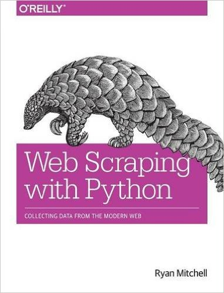
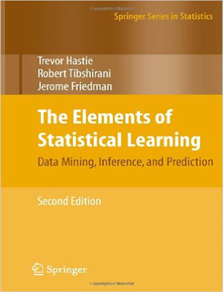
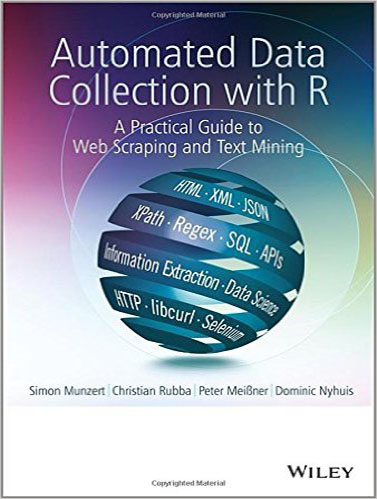

Home
Bookshelf
Sampling
Skills &
Tools
Recent
Learning
Analytics
Examples
Customer
Examples
Research
Examples
GitHub
Repository
Sampling from Bookshelf
For detail on each book (e.g., table of contents), each pic links to Amazon.
Scala and Python

Machine Learning

R

Statistics
Infrastructure
Software Development Processes
Operations Research
Human Networks
Computational and Statistical Linguistics
Thinking
AI
Russ Robbins
Contact Me
View Russ Robbins' Linked In profile
View Russ Robbins' one page printable resume